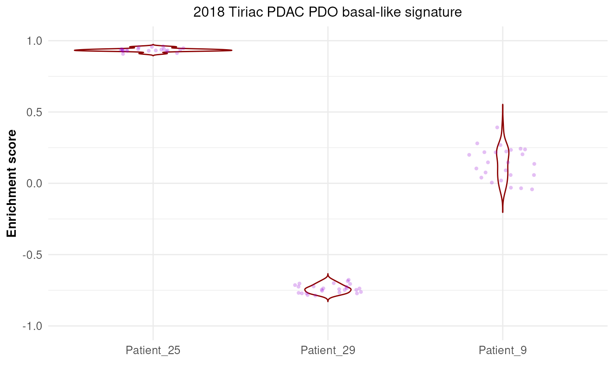

R/externalGraphFunctions.R
plotPermutationSamplesDistribution.RdThe function generates a graph of all the enrichment results obtained during the permutation step for the selected signature and the specified samples. The graph also includes a compact display of the continuous distribution of the values for each sample.
plotPermutationSamplesDistribution(
x,
signature,
samples,
violinColor = "black",
pointColor = "black",
positionJitter = 0.2,
alpha = 0.25,
size = 0.95,
seed = NA
)a list of class "splitTypeResults", the output object
from runSubtypingfunction, to be graphed.
a character string representing the signature
that will be used to create the graph. The signature must
be present in the object.
a list of character string representing
the names of the samples that will be used to create the graph. The samples
must be present in the object.
a character string representing the color of the
line for the kernel density distributions in the graph.
Default: "black".
a character string representing the color of the
dots representing the enrichment scores for the selected samples in
the graph. Default: "black".
a numeric representing the amount of
vertical and horizontal jitter added to the position of the points on the
graph. Default: 0.20.
a numeric representing the amount of the opacity of
the points on the graph. If NA, the color is completely transparent.
Default: 0.25.
a numeric that represents the size of the points
on the graph. Default: 0.95.
a integer that will be used as seed to make the jitter
reproducible. If NA, the seed is initialized with a random value.
Default: NA.
a ggplot object that contains all the enrichment scores
obtained through the permutation step with the kernel desntiy distributions
for the selected samples and the selected signature.
## Loading signatures
data("signaturesDemo")
## Load demo normalized expected counts for 30 patients
data("expNormalCountsDemo")
## Fix seed for reproducibility
set.seed(1221)
## Run classification on the 30 patients using 20 permutations on 75% of
## the dataset, and 10 points per patient for the up-scaling step
results <- runSubtypingBimodal(geneLists=signaturesDemo,
expectedCountsMatrix=expNormalCountsDemo,
permRatio=0.75, permNbr=30, upscaleNbr=5)
#> number of iterations= 77
#> number of iterations= 40
## Graph the enrichment results from the permutation for 3 samples
plotPermutationSamplesDistribution(x=results,
signature="2018_Tiriac_PDAC_PDO_basal-like_signature",
samples=c("Patient_9", "Patient_25", "Patient_29"),
violinColor="darkred", pointColor="darkviolet", positionJitter=0.20,
size=1.2, seed=121)
